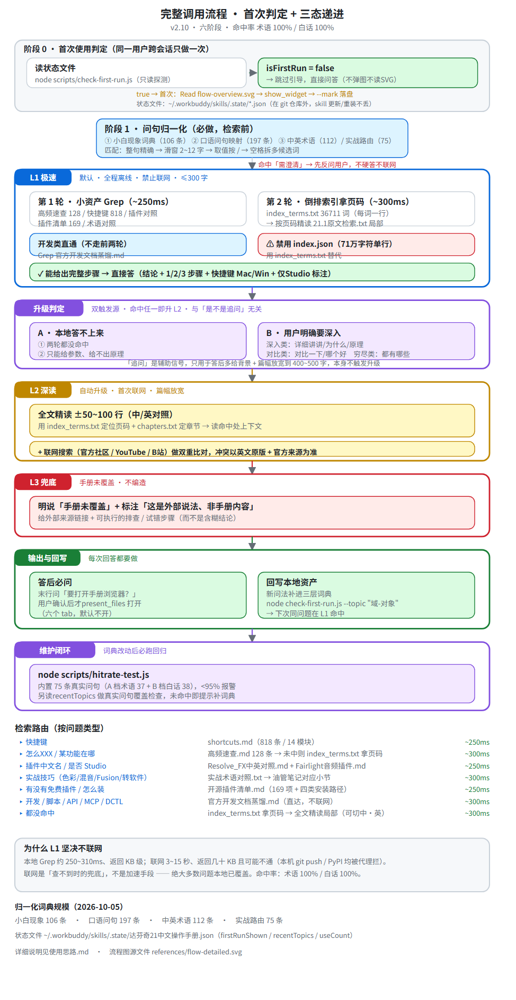

| 讲师 | 方向 | 适用问题 |
|---|---|---|
| Cullen Kelly | 色彩科学 | 色彩管理三层次 / ACES vs RCM / Look 开发 / HDR·Dolby Vision |
| Casey Faris | 零基础全链路 | 入门路径 / Fusion Zero to Hero |
| Darren Mostyn | 广播级调色 | 色彩匹配 / 固定节点树 / D-Log M / DRT vs CST |
| MrAlexTech | Fusion 技巧 | 免关键帧动画 / 常见故障排查 |
| Team 2 Films | 系统课 · 转软件 | Premiere / FCP → Resolve / 色彩管理 / Fusion VFX |
| Jason Yadlovski | Fairlight 音频 | Complete Fairlight Audio Course 作者 |
| 免费版脚本 | 21.1 起彻底失去 Python/Lua 脚本能力（官方称Python API 被滥用于把 Studio 功能 hack 进免费版） |
| Python 版本 | Python 2 已移除 · 内置 Python 3.14（import DaVinciResolveScript 开箱即用，无需设环境变量；但不支持 pip/Tk/IDLE） |
| 21.1 新增 | 约 20 个新 API（多机位 / SmartSwitch / 淡入淡出 / 音频正规化 / 逐字稿带说话人/ 时间码 / 媒体克隆 / 渲染预设 / DCTL 校验 / Replay Editor / 控制台脚本）+ 原生 MCP Server（Studio） |
| 21.1.1 增量 | Async API 家族（快速导出 / 逐字稿 / 场景检测 / Smart Reframe / 字幕生成）+ ApplyGradeFromDRX 支持应用到所有节点层 |